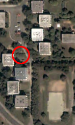

Loudest bush
Winter is pretty quiet time of a year. Considering birds, crows sometimes caw, but there’s almost no beeping (except PC speaker (especially for vim beginners)) during winter.
However, on my way to school I walk past this bush, that is very, very loud. The beeping is particularly intensive during morning, my educated guess is that it keeps people living in radius of about one kilometer awake.
I have always wondered where all the birds disappear when it’s winter – and now I finally know…
No thoughts on “Loudest bush”
Add your comment — How does this work?